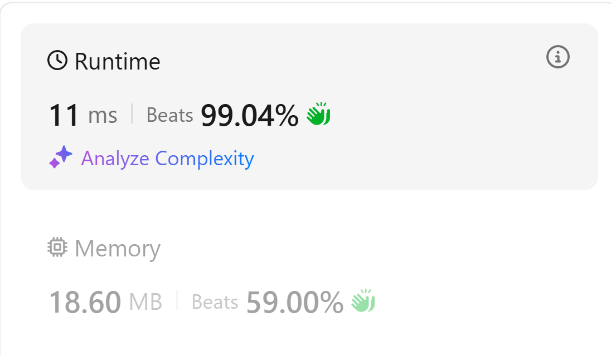
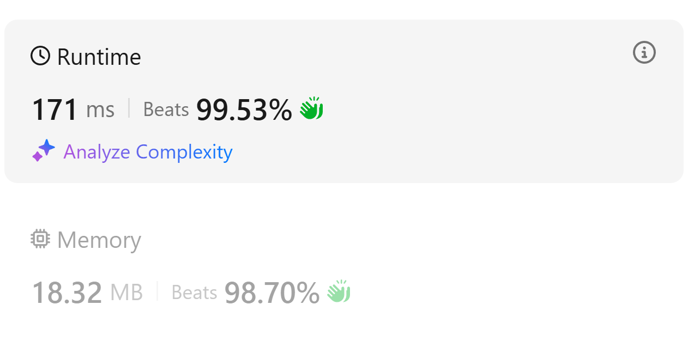

Diary of Learning Algorithms
There are some very interesting algorithm techniques that are worth contemplating and discussing. It would be a shame not to document them! Therefore, in this journal, I will record the unforgettable algorithm problems or techniques I encounter during my studies.
This diary is sorted in reverse chronological order, with the newest entry at the top.
Substring with Concatenation of All Words: Sliding Window Optimization
July 30, 2025, Afternoon
Original problem: LeetCode 30. Substring with Concatenation of All Words
One relatively simple aspect of this problem is that all the words are of the same length. Therefore, we only need to construct a window with a total length equal to the sum of all words, and then check if the words in the window are valid. While sliding the window, we can move one word length at a time.
The algorithm works as follows:
- Build a hashmap to store the given word counts; also create a
cur_hashmapto track the window content. - Set up a left pointer
L, and letLstart from different positions within one word length. - Set up a right pointer
Rto represent the end of the window, starting from the same position asL. - Slide
Rin steps of word length. For each word sliding into the window: - Check whether the word exists in the given hashmap. If not, the current window is invalid.
- If it does, check whether
cur_hashmapmatches the original hashmap. If they match, record the positionL.
The overall idea is very simple and clear, but directly comparing cur_hashmap and the original hashmap can be time-consuming. To optimize, we can refine the checking during the sliding window process.
We can introduce a variable valid_count. Only when the new word new_word entering the window exists in the hashmap do we increase valid_count. If cur_hashmap[new_word] exceeds hashmap[new_word], we freeze R and shrink L until cur_hashmap[new_word] == hashmap[new_word].
While shrinking the window, we only decrease valid_count when the word pushed out from the left, left_word, is not the same as new_word.
Finally, if valid_count == target_valid_count (which is the total number of words in the hashmap), we add the current L to the result.
Code implementation is as follows:
class Solution:
def findSubstring(self, s: str, words: List[str]) -> List[int]:
if not words:
return []
hashmap = {}
target_valid_count = 0
for word in words:
target_valid_count += 1
hashmap[word] = hashmap.get(word, 0) + 1
length = len(words[0])
result = []
cur_hashmap = {}
L = 0
for i in range(length):
cur_hashmap.clear()
valid_count = 0
L = i
valid_count = 0
for R in range(i, len(s), length):
new_word = s[R:R+length]
if new_word not in hashmap:
L = R+length
valid_count = 0
cur_hashmap.clear()
else:
cur_hashmap[new_word] = cur_hashmap.get(new_word, 0) + 1
if cur_hashmap[new_word] <= hashmap[new_word]:
valid_count += 1
else:
while cur_hashmap[new_word] > hashmap[new_word]:
left_word = s[L:L+length]
cur_hashmap[left_word] -= 1
L += length
if left_word != new_word:
valid_count -= 1
if valid_count == target_valid_count:
result.append(L)
return result
AC Performance:

Four Pruning Techniques for Word Search II
July 30, 2025 Early Morning
Original Problem: Leetcode 212. Word Search II
Optimization 1: Removing a Word from the Trie After Finding It
Technique: In the DFS, after a word is found (i.e., if node.word is not None:), in addition to adding it to the result set, immediately execute node.word = None.
Benefits:
- Prevents Duplicates: Avoids adding the same word found from different paths starting at the same board position.
- Slight Speed-up: Subsequent DFS traversals passing through this node will not trigger the
addoperation again.
Optimization 2: Dynamic Trie Node Pruning
Technique: During the backtracking phase of the DFS, if all of a Trie node's child paths have been explored (i.e., its children dictionary becomes empty) and it no longer represents a complete word (node.word has already been set to None), then this node has become useless and can be removed from its parent.
This dynamically shrinks the size of the Trie. Subsequent DFS searches starting from other board positions will not enter these "exhausted" dead-end branches, thus reducing redundant computations. This is a form of pruning on the Trie structure itself.
Optimization 3: Adjacency Pre-Pruning
This can be considered a form of Heuristic Pruning.
- Preprocessing: First, iterate through the
boardto store all physically adjacent character pairs (e.g., "oa", "an") in a hash set. - Filtering: Before adding a
wordto the Trie, check all its adjacent character pairs (e.g., in "oath", the pairs are "oa", "at", "th"). If any pair (or its reverse) does not exist in the hash set, it means this word is physically impossible to form on the board. Skip this word and do not add it to the Trie.
This method eliminates a large number of invalid candidate words from the source with a low-cost preprocessing step before the core algorithm begins. If the test data contains many invalid candidate words, this optimization can lead to a performance improvement of orders of magnitude.
Optimization 4: Character Frequency Pre-Pruning
This is another powerful heuristic pruning technique.
- Preprocessing: Count the total frequency of each character on the
board. - Filtering: For each
word, also count its own character frequencies. If the count of any character required by thewordexceeds the total count available on theboard, skip that word directly.
Similar to Optimization 3, this also filters out invalid words during a preprocessing phase. It is particularly effective for words containing many repeated letters (e.g., "banana").
Implementation Code:
class TrieNode:
def __init__(self):
self.children = {}
self.word = None
class Solution:
def findWords(self, board: List[List[str]], words: List[str]) -> List[str]:
trie = TrieNode()
has = set()
rows = len(board)
cols = len(board[0])
directions = [
[0,1],[0,-1],[1,0],[-1,0]
]
board_counts = Counter(c for row in board for c in row)
for r in range(rows):
for c in range(cols - 1):
has.add(board[r][c] + board[r][c + 1])
for r in range(rows - 1):
for c in range(cols):
has.add(board[r][c] + board[r + 1][c])
for word in words:
word_counts = Counter(word)
if any(word_counts[char] > board_counts.get(char, 0) for char in word_counts):
continue
for i in range(len(word) - 1):
a, b = word[i], word[i + 1]
if a + b not in has and b + a not in has:
break
else:
curr = trie
for char in word:
if char not in curr.children:
curr.children[char] = TrieNode()
curr = curr.children[char]
curr.word = word
result = []
def tracking(i,j,root):
cur_char = board[i][j]
if cur_char not in root.children:
return
node = root.children[cur_char]
if node.word is not None:
result.append(node.word)
node.word = None
board[i][j] = '$'
for dx, dy in directions:
ni, nj = i + dx, j + dy
if 0 <= ni < rows and 0 <= nj < cols and board[ni][nj] != '$':
next_char = board[ni][nj]
if next_char in node.children:
tracking(ni, nj, node)
child_node = node.children[next_char]
if not child_node.children:
del node.children[next_char]
board[i][j] = cur_char
for i in range(rows):
for j in range(cols):
cur_char = board[i][j]
if cur_char in trie.children:
tracking(i,j,trie)
return result
AC Performance:
